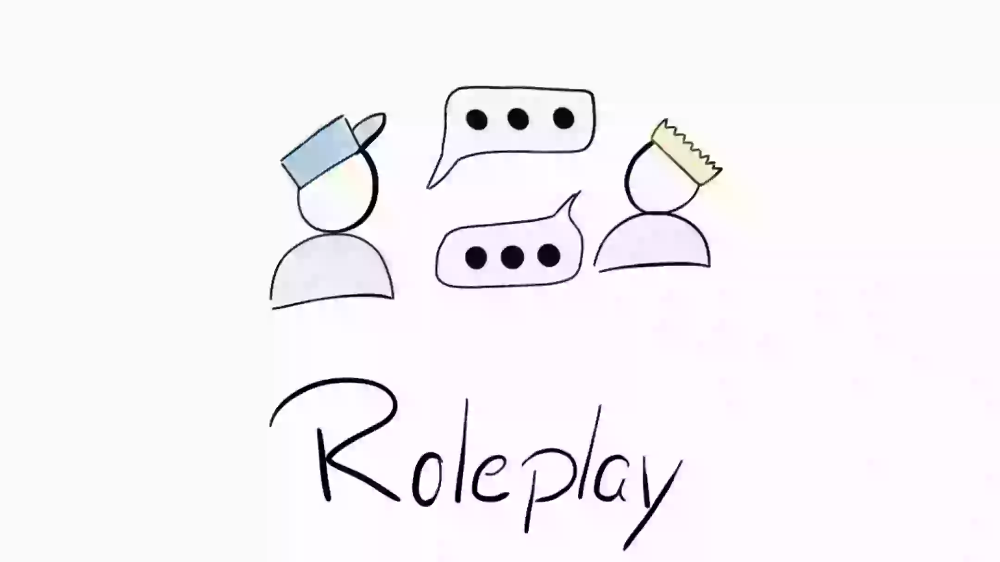
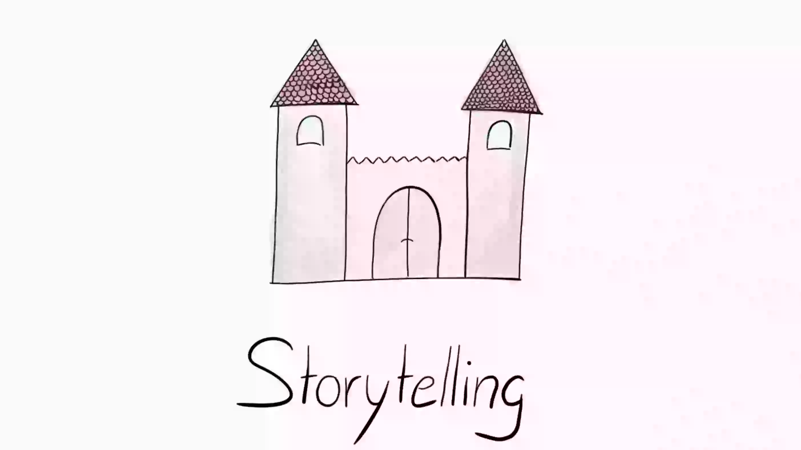
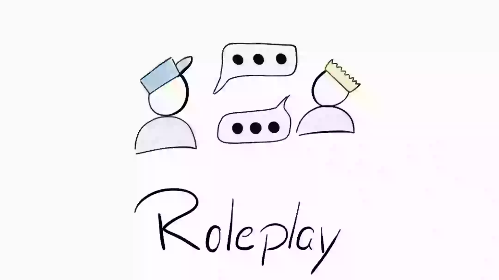
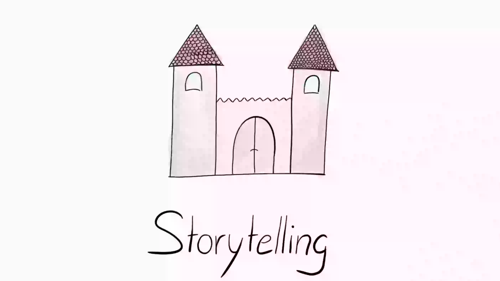
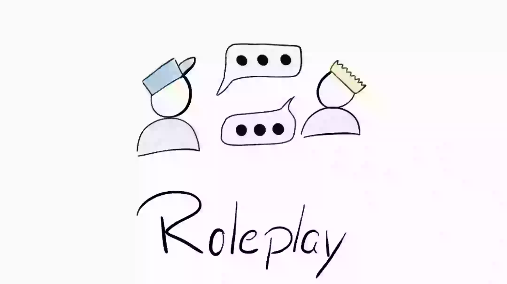
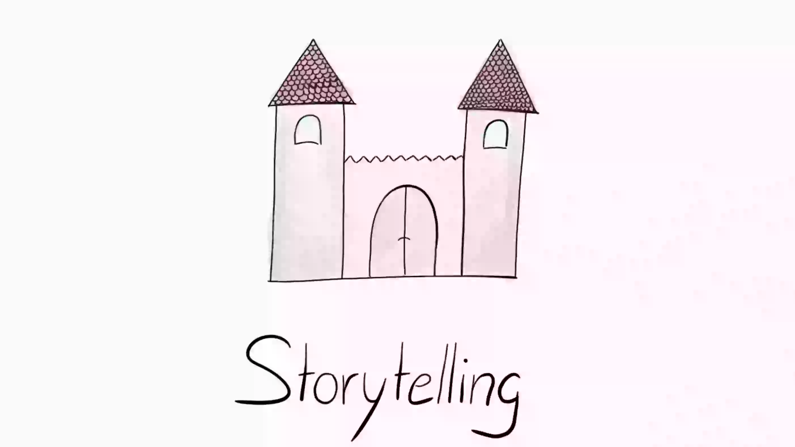

Erfahrung:
Zeit:
Ressourcen:


 





Beim Brainstorming sammeln wir schnell eine Vielzahl von Ideen. Dabei gibt es keine schlechten Ideen, da es hier zunächst nur um die reine Ideensammlung geht und nicht um die Bewertung. Die Ideen werden dabei auf Papier oder digital festgehalten.
Auf dieser Seite können Sie anhand Ihrer Erfahrung, Zeit und Ressourcengröße die idealen Prototyping filtern.
Erfahrung:
Zeit:
Ressourcen:

